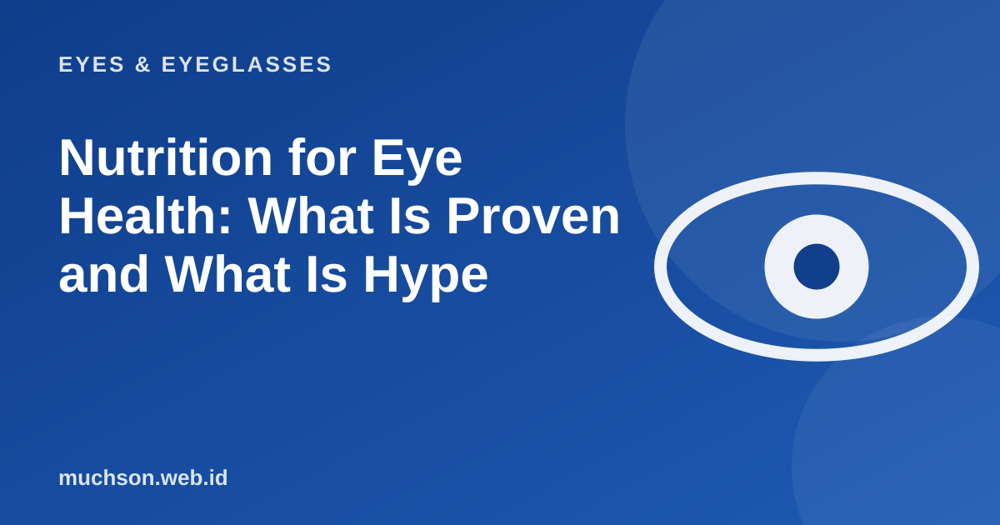

Home › Articles › Eyes & Eyeglasses
Eyes & EyeglassesNutrition for Eye Health: What Is Proven and What Is Hype
Eye supplement ads promise sharper vision. In reality a balanced diet matters, but no single food cures myopia. Here is what has enough evidence behind it, and how to tell exaggerated claims apart.

Nutrients that really matter
| Nutrient | Role for the eyes | Food sources |
|---|---|---|
| Vitamin A | Important for vision in the dark and for the eye surface; a deficiency can cause night blindness | Liver, eggs, milk, orange and dark green vegetables and fruit |
| Lutein and zeaxanthin | Pigments that collect in the centre of the retina | Spinach, water spinach, broccoli, corn, eggs |
| Omega-3 | Linked to the health of the eye surface; research results for dry eye are mixed | Oily fish such as salmon, sardines, mackerel |
| Vitamins C and E, zinc | Antioxidants that support retina health | Citrus fruit, nuts, meat, whole grains |
Text description of the diagram
- Green and coloured vegetables: Lutein, vitamins, antioxidants
- Fish or healthy protein: Omega-3, zinc
- Fruit and nuts: Vitamins C and E
- Enough water: Helps tear production
Myths and claims to look at carefully
Before buying supplements
If you have a particular eye condition, diabetes, or are pregnant, talk to a doctor before taking supplements.
FAQ
Are lutein supplements necessary?
If your diet is already varied, usually not. In certain conditions a doctor may recommend a specific formulation.
Does smoking affect the eyes?
Yes. Smoking is linked to a higher risk of cataract and macular degeneration.
Does nutrition affect a child's myopia?
Balanced nutrition matters for growth and development, but it does not cure myopia. Time outdoors and regular check-ups are more relevant.